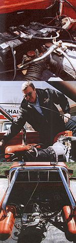

Alternative-energy vehicles have been motoring through the pages of MOTHER since 1970. Our response to the energy crisis at that time took the form of a number of investigations into alcohol, ethanol, gasohol, and ultra-efficient diesel engines. But in 1979, Dave Arthurs, then of Springdale, Arkansas, came upon a design combining electric and gas engine formats that made even the billion dollar development efforts in Detroit seem like a waste of time.
Using parts that he had purchased for under $1,500, Dave designed and built an engine system for his Opel GT that could propel the car 75 miles or more on a single gallon of gas! Dave's Opel was a
hybrid
electric vehicle. That is, the car was driven by both an electric motor and a conventional internal combustion engine. An array of six-volt batteries provided the direct power for the electric drive, while an efficient six-horsepower (hp) lawnmower engine ran continuously to generate power for and recharge the batteries. The combination of power plants made the car amazingly versatile. The batteries alone could be used for trips of under 25 miles, but the car had an unlimited range as long as the generator engine was running and the driver didn't have a penchant for drag racing. Additionally, if the electric power plant developed a problem, the Opel could travel on the five-hp engine alone at speeds of 30 miles per hour. Dave reported that the crossbreed hookup performed so well that, initially, MOTHER'S editors were more than a bit skeptical. It was decided that the only way to effectively test the design was to build our own.
A few weeks later, we had a hybrid engine comfortably placed in a 1973 Subaru chassis. We had decided to install a slightly bigger generator engine, but our car still averaged 83.6 miles to the gallon, ran flawlessly, and emitted a minimum of pollutants as it tooled along the highway. The idea caught on like wildfire among MOTHER readers and over the course of the next year, 60,000 people asked for plans to convert their cars. As might be imagined, technology has marched along at a pretty brisk pace since 1979, and recently we were gratified to hear that Dave has been to the drawing board again, converting the engine of a 1980 Toyota pickup into an even more efficient hybrid of electric and gas formats. The results are simply better than ever. MOTHER spoke to Dave at his Fayatteville, Arkansas, home about his designs.
Some Electricity Basics
If it has been more than a few years since physics class, and Dave's talk of amps and volts leaves you in the dark, here's a short refresher. Dynamic electricity is simply electricity-a number of freed electrons, or negatively charged atomic particles-set in motion. An amp, or ampere, is a measure of the number of electrons flowing through a conductor (in most cases, a copper wire). In other words, an amp is a measurement of the volume of electricity. When the electrons travel through the wire, they encounter resistance from other atoms and particles. An ohm is a measure of this resistance. A volt is a measure of the force of the electrical flow which causes one ampere of electricity to travel through one ohm of resistance. A nine-volt battery, for instance, is capable of generating a flow of nine amperes of electricity through a one-ohm conducting wire.
MOTHER:
How has the format of the hybrid vehicle changed since 1979?
Dave Arthurs:
Although there have been quite a few developments in combustion engine design over the last decade, battery technology has taken the real leap. That's fortunate for the hybrid car since the electric engine provides the lion's share of the motivation. Basically, batteries are getting lighter and more powerful. Six-volt batteries were the only types suitable for my purposes back in the '70s. Have you ever seen one of those old six-volt batteries? They're monsters. I had to use six to generate the appropriate current, and at 75 pounds apiece, a very significant amount of the batteries' energy was spent hauling itself around. The new models weigh precisely the same but produce twice as much power. As a result, cruising range has now been extended, as has as average cruising speed. The batteries I use are deep-cycle with a cold-cranking power of 1,314 amps. I highly recommend a 36-volt circuit, so you'll need at least three of these 12-volt batteries. Most cars will draw 150-200 amps at 45 mph. When looking for a battery, compare the reserve capacity and the number of plates per battery. A high number indicates deep-cycle capability and high-current output. One battery I've found has 186 plates and a 75-amp, 12-volt output for 100 minutes.
MOTHER:
But does a conventional engine still supply the batteries with power?
DA:
Absolutely. That's a must if you want to travel distances of over 25 miles. The small combustion engine must operate at a constant speed if a long-range drive is in the works, supplying the batteries with power. I installed three 12-volt, heavy-duty automobile batteries-in series-"fed" by a 10-amp generator to do that job. The small engine then powers the generator. But I decided I wanted a bit more power in the new pickup, so I decided to forgo another five-hp gasoline engine in favor of a nine-hp diesel. That's equivalent to about a 20-hp gasoline engine. It turned out to be a perfect arrangement. It has tremendous torque, will bear very heavy loads without stalling, and is incredibly reliable.
MOTHER:
Can the batteries be charged at home if you want to just use them for a short trip?
DA:
Sure. Either a 36-volt charger can be used to charge all three batteries at once or a 12-volt model (which is much less expensive) can be used to charge each battery individually. Either one can be plugged into a standard home outlet. The electric rate here in Arkansas is 74 per kilowatt-hour. At that rate the cost is less than a penny per mile to operate the hybrid in the electric mode. But the range is limited by the number and type of batteries that you use. If you want to be able to drive for longer distances on the electric drive alone, the battery pack must be enlarged accordingly.
MOTHER:
How would I arrive at the right battery pack for my own car?
DA:
A typical 2,500 pound hybrid electric car will require approximately 200 amps at 36 volts to run 45 mph. Using that kind of information you can arrive at the best kind of battery pack for your particular use. For instance, two banks of the 186-plate, 12-volt batteries (six batteries) has nine kwh available. It takes 7.2 kwh to go 45 miles on the open road. With this battery system you should have a good hour of drive time on the batteries alone.
MOTHER:
How does the conversion process happen?
DA:
It can happen in many different ways. The simplest modification that you can make will give you a parallel hybrid. Add an electric motor to the existing engine of a car through drive belts, install an electric clutch (much like an air compressor), and that's basically it. The original engine and electric motor run in tandem and offer considerably improved fuel economy. The disadvantage to this method is that the large gas engine has to run all the time. It would be better if you could run on either gas or electric independently of each other. The series hybrid accomplishes that. In that design (used in the truck), the small diesel engine indirectly provides the motive force of the car. In other words it drives a generator to provide electricity to the electric motor. This method has several advantages. The diesel engine can be run at a constant number of revolutions per minute matching its peak fuel economy, and the electricity the generator produces can be shunted directly to the drive motor or into a battery bank. One of the greatest things about a series hybrid is its efficiency. Very little power is wasted. Every time you are going downhill and every time you stop, you have the opportunity to turn that inertia into electricity. You see, the electric motor which drives the vehicle is also a generator. A motor and a generator are virtually the same animal as long as we are speaking about direct current electricity. And when you are slowing down, you are actually "gearing down" : This over-revs the motor, turning it into a generator that produces electricity for the batteries. If you glance at the amp meter, you actually can see electricity returning to the batteries when this happens. This is not only energy efficient, but also saves a great deal of wear on the brakes because it slows the truck down.
MOTHER:
Why did you choose a pickup for your new design?
DA:
I just happened to have a older truck to modify. Any car can be used (although the lighter the better) for a hybrid. I needed a test vehicle capable of demonstrating different versions, both series and parallel, so I settled on a four-wheel drive pickup because there is enough room in the rear for the engine/generator package while the original engine remains up front. The rear wheels are powered by the electric motor; the front by the original gas engine. Vehicles modified at home will probably have the original engine removed, but I needed both to demonstrate efficiency, performance, etc. The truck is modified by removing the rear drive shaft altogether and mounting a short drive shaft and an electric clutch to the motor. The short drive shaft is the same as the front drive shaft in length.
MOTHER:
What kind of performance are you getting?
DA:
The electric motor performs and accelerates best at low speeds, as opposed to a gasoline engine which has most of its torque at the high end. So depending upon maintenance, charging, etc., you accelerate from zero to 40 mph in six to eight seconds. The engine-driven generator can handle the demand from the main motor up to speeds of about 50 mph. The "stored" energy in the batteries comes into play at higher velocities, giving extra kick for passing and climbing hills. Gearing can be changed if higher performance is desired but the truck was never really intended to be a scorcher. I was gunning for reliability and efficiency. Let the speed enthusiasts think up a supercharger if they want one!
MOTHER:
But isn't driving the truck dramatically different from driving a conventional car?
DA:
It's exactly the same. There is a slight hum from the electric motor and a bit of noise from the diesel engine, but actually, noise levels in the cab are lower than those in a conventional car.
MOTHER:
What kind of mileage do you get when the diesel engine is running?
DA:
A 25-mile test run using the nine-hp diesel engine showed that a gallon of fuel could produce sufficient amperage at 36 volts to drive the car two hours at 45 mph. That's 90 miles to the gallon. If the terrain had been a bit less hilly, the average speed would have been closer to 55 mph. It's important to realize, however that stop-and-go traffic shortens the range and reduces efficiency because of the heavy current draws (600 amps) in taking off. That's where the surge current (cranking power) of the battery comes in. A great deal of city driving will certainly affect overall fuel economy.
MOTHER:
Lead and acid batteries are still not exactly nature's best friend though. They're going to stick around those landfills long after we're gone, leaking lead and acid the whole time. How big an issue has that been in your design?
DA:
If you're careful, you need never throw away the batteries in the truck. When exhausted, they can be cheaply rebuilt by the manufacturer. The problem is getting consumers to want to recycle them. Here in Arkansas, in order to make sure that as few batteries and their contaminating agents as possible end up in the landfills, a $10 fine has been imposed on any buyer of a battery who doesn't bring the old one with them. All those old batteries go back and get remanufactured.
MOTHER:
The Opel conversion cost you $1,500. What has happened to the prices of equipment since 1979?
DA:
The main expense was, and still is, the electric motor, which is actually the starter motor for some commercial jet engines. Often they can be obtained surplus for as little as $300-$400. A new one will run you about $800. Wiring, batteries, and relays generally cost about $400, a generator about $200. The last-and most variable big cost-is the combustion engine. A lightweight vehicle may run just fine on the 5-hp engine used in my first car. You'll be writing a check for about only $200-$300 for that one, but if additional power and bigger engine are needed, the costs will go up. My diesel engine ran me about $1,200. It's important to remember that all of these expenses will go down considerably, though, if you are willing to do some scrounging and dealing. A careful buyer can spend as little as $2,000 for the whole thing, though I've known folks who forked out twice that much for all-new equipment and custom installation.
MOTHER:
Do you consider this process very practical if the conversion's going to cost $2,000 from the start?
DA:
It's actually very practical if you happen to have an old car or truck with serious engine problems that you still want to keep around. I'm not suggesting that you tear the engine out of your new '93, but an older car that still has a good chassis will run reliably for years on the hybrid drive, getting two to three times the mileage and producing a fraction of the pollutants in the process.
MOTHER:
How many years will the drive run before problems begin? DA:
You might not believe this, but I'm still using the same electric motor that I installed in the Opel in 1979, and that motor was built in 1952! It has over 100,000 miles on it and the only maintenance it has ever required is $8 for parts. The only possible problem with an electric motor is overheating, so I've made a point of using a cooling fan and running it continuously. The weakest link in the chain is obviously the combustion engine. The 5-hp lawn mower engine I used in the Opel lasted only a few years, but it was so cheap that replacing it was really no big deal. Eventually I decided that the new design merited an investment in the diesel, which I purchased new in 1980. It's still running perfectly. I think the chassis will fall apart before the engine does.
MOTHER:
What's on the horizon for hybrid design?
DA:
I'm in the process of experimenting with a rotary engine currently. One of its great advantages is that it can be modified to run on virtually any kind of fuel-alcohol, peanut oil, anything. I've also developed some plans for people who want maximum battery range. My newest banks can sustain the car for well over 100 miles. That's more than enough for most commuter trips. NASA has already designed powerful batteries which can take a full charge in minutes. That technology will just get cheaper and more accessible, and in the not too distant future I expect that fuel stations will offer quick chargers for similar battery packs in addition to conventional fuel. The best experiments have really just started.
|
 Above left: The battery bank for the electric drive, composed of three 12-volt, deep-cycle batteries in series. Above: Dave points out some of the components in the 400-amp electric motor. Right The bed of the pickup was an ideal place to put the hybrid-engine array because the original engine remains under the hood. |
|
|